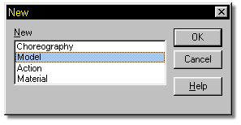
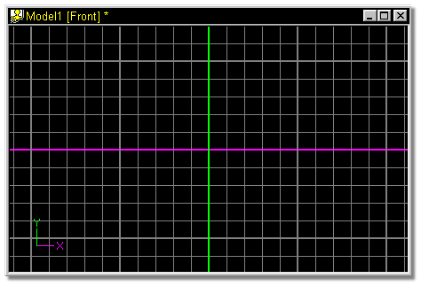

Start Martin Hash’s 3-Dimensional Animation. If there are any objects
present, select Close from the Project menu.
Start Martin Hash’s 3-Dimensional Animation. If there are any objects
present, select Close from the Project menu.
Click the New Button.
When the following dialog appears, select Model, and click OK.

An empty modeling window will open to the front view.
